Hello！I'm Hao Ruolin
我是 郝若琳
设计专业出身，并致力于成为一名产品经理
此作品集网站是本人独自设计、制作、开发的
出身建筑设计，本人有着较强的逻辑思维、审美能力与复杂问题解决能力
985本硕，在初创AI公司实习过，也在在央企设计院实习过，现在致力于往互联网产品方向闯一闯
Experience
教育 & 实习
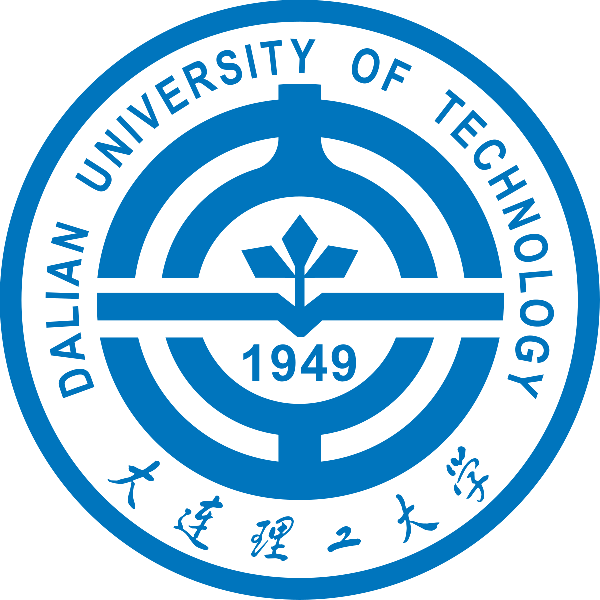
2020.09-2025.06大连理工大学
建筑设计(专业)
学士学位
- 学业成绩:92.2/100，专业前1%：辽宁省优秀毕业生，连续四年获得国家奖学金，连续三年校三好学生
- 担任校乒乓球协会副会长：参与策划并落地3场大型赛事，累计参与人数超800人，通过线上线下联动，设计“青春乒乓”系列活动矩阵，协会会员增长至700人较上年提升150%
- 担任班级团支书：主持支部大会、团员大会等会议100+次，完成报告100+篇，主持团课学习50+次
同济大学
城市设计及其理论(专业)
硕士学位
- 用户洞察与数据策略：挖掘传统城市设计缺乏量化工具等痛点，构建基于多源数据的驱动设计策略
- AI模型研发：负责核心AI评估模型的全周期开发，应用深度学习网络对街景图像进行语义分割，实现对城市多种空间的自动化评估
- 原型设计：设计数据产品，通过计算机可视化技术，将复杂的AI分析结果与城市形态、活力指标直观呈现给设计师，支持实时互动分析
秘塔科技
运营部
AI产品运营实习生
- 增长策略与渠道运营:制定多渠道冷启动策略，负责产品在小红书、抖音等平台的冷启动增长；搭建KOL/KOC增长矩阵，提升用户增长；
- 数据驱动的增长优化:通过A/B测试与投放优化，降低CAC提高ROI；复盘爆款与普通内容的差异，持续迭代KOL创作者内容
- 产品GTM与市场反馈闭环:参与制定“深度研究”新功能推广计划、用户教育与内容设计及市场反馈收集与分析
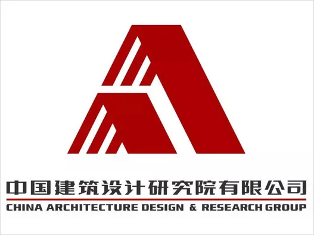
2024.09-2024.12中国建筑设计研究院
文旅设计部
产品设计实习生
- 【恩施州来凤文化展示中心项目】
通过需求分析，建立用户行为分析模型，驱动展览空间优化与方案迭代，提升用户满意度； 推进“实体空间+数字中台”融合方案，优化空间布局使游览效率提升； - 【潇河市民中心数字化产品项目】
调研分析提炼两大痛点，参与“建筑-场景-服务”一体化方案设计； 基于用户反馈与行为数据，优化动线设计； 设计智慧中台架构，实现人流监测、能耗管理等模块的互联互通
Project
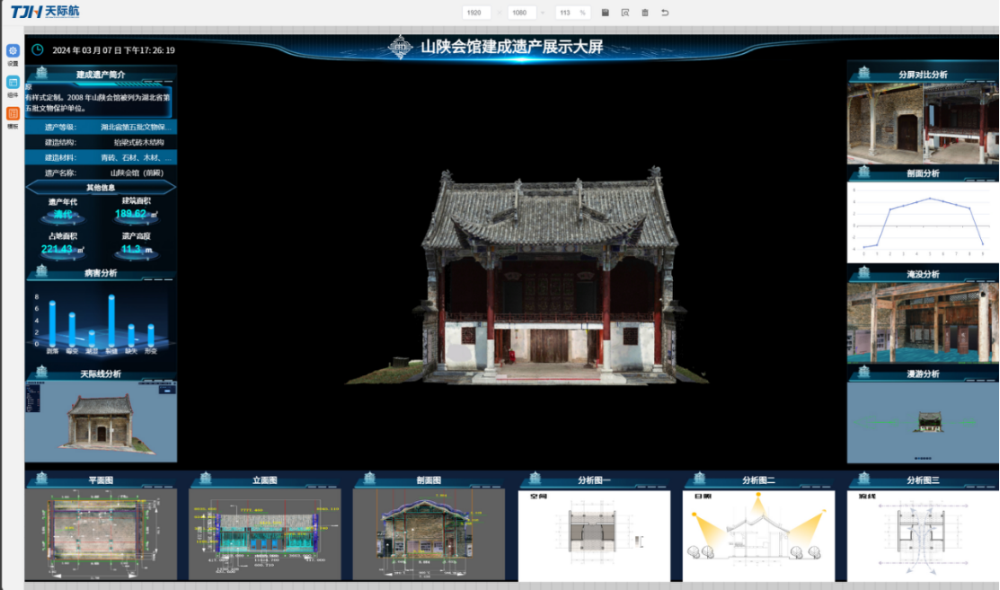
建成遗产数字化产品
山陕会馆展示大屏项目前期需求挖掘、竞品分析、PRD文档撰写、数字孪生平台搭建
需求挖掘：联合文字学者进行10+次深度访谈，提炼“传统建筑知识库”等用户痛点...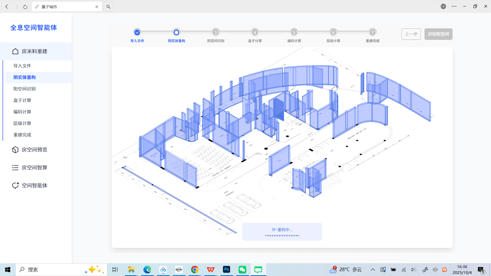
全息空间智能体平台
量子城市全息空间智能体前期需求挖掘、PRD文档撰写、产品原型设计、前端设计
一款AI产品的从0到1设计与验证，成功将非结构化的CAD图纸，转化为可交互、可分析的建筑数字孪生模型...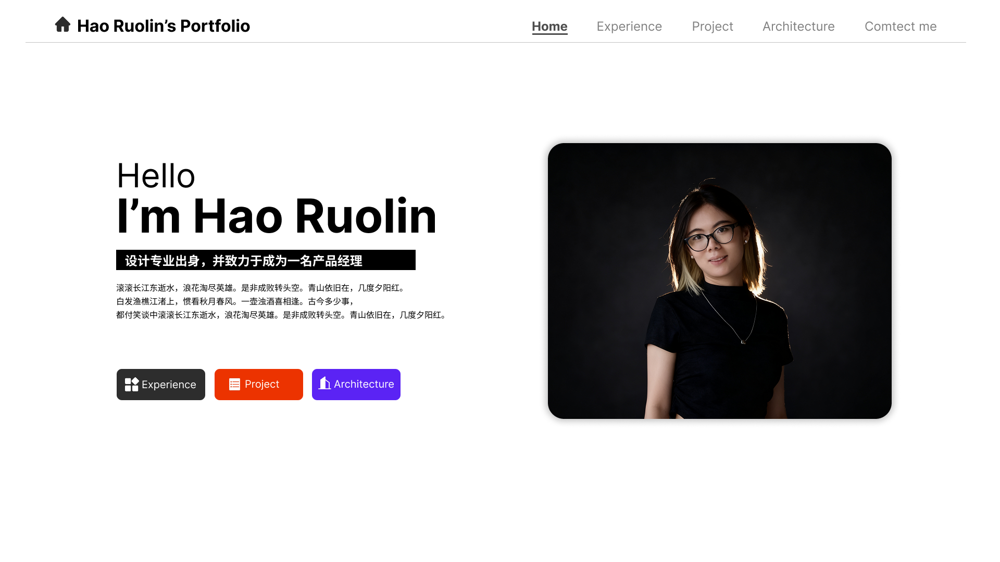
个人网页
完整覆盖了需求挖掘、竞品分析、原型设计、AIGC辅助开发与最终上线部署
需求挖掘与竞品分析:洞察用户阅读传统作品集时“内容冗长、阅读不便”的核心痛点...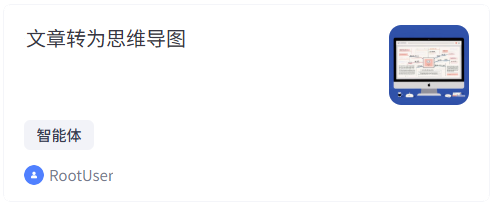
基于Coze平台的“多模态内容可视化”AI产品开发
AI效率工具，实现了将长文本、网页、视频等多模态内容一键转化为结构化思维导图
为解决用户在处理长文本、网页、视频等内容时，信息抓取效率低、难以快速把握核心结构的痛点...Architecture
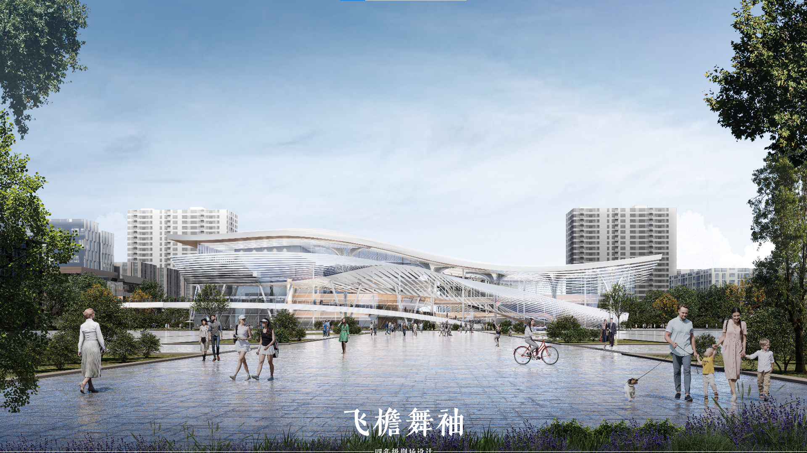
城市剧场设计
旨在挑战传统剧场“功能单一、空间封闭”的用户体验痛点...
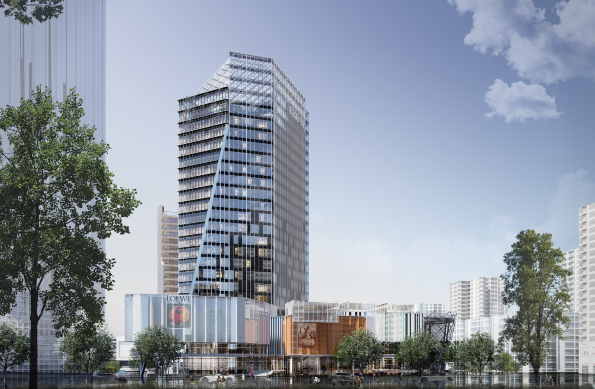
商业综合体设计
旨在解决传统商业综合体功能封闭、与城市网络关系较弱的核心痛点...

大连站北片区城市设计
旨在解决大连老火车站片区因铁路阻隔导致的南北发展严重失衡、区域活力衰退的核心问题...
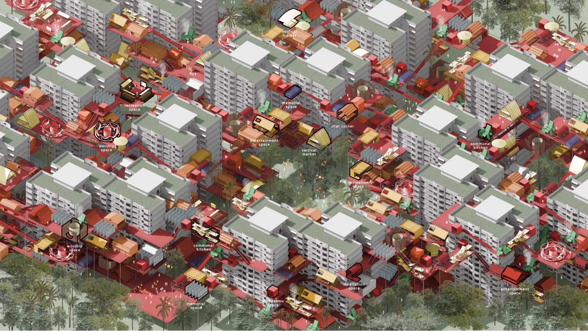
桃园未来高密度街区城市更新
聚焦于中国台湾眷村，旨在解决其因城市化进程而导致的文化失落、社群解体和老龄化三大核心痛点...
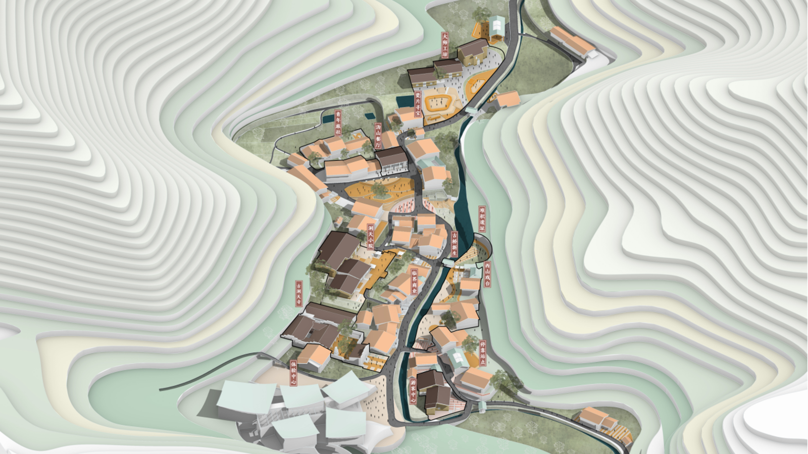
沩山村醴陵窑片区乡村更新
旨在解决传统历史村落旅游体验单一、用户吸引力不足的痛点...
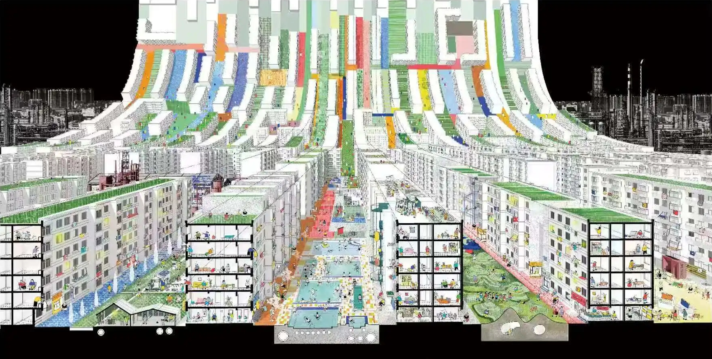
鞍山典型板楼公共空间更新
聚焦于中国普遍存在的“老破小”板楼社区，旨在解决公共空间闲置与邻里关系疏远两大核心用户痛点...
Contact me
让我们开始合作吧！
如果您有任何项目的想法或者帮助，请随时联系我。我乐意与你讨论如何将想法变成现实。
- 📧 haoruolin111@163.com
- 📞 +86 123 456 78900
- 📍 中国, 上海